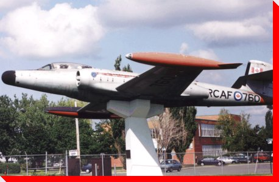

|
LARGE
CANADIAN ROADSIDE ATTRACTIONS
PLANES
ON PEDESTALS
|
|


CF-100 "Canuck"
Saint-Hubert, Quebec
Manufacturer and Model: Avro Canada F-100 Canuck Serial No. 18760
Credit: Pierre Thiffault of the Fondation
Aerovision Quebec - Quebec Air and Space Museum,

Planes
on Pedestals
Main | By Location
| By Type | Wanted
Photos of Planes
Large
Canadian Roadside Attractions
Copyright © 2001 - 2013 Ed
Solonyka